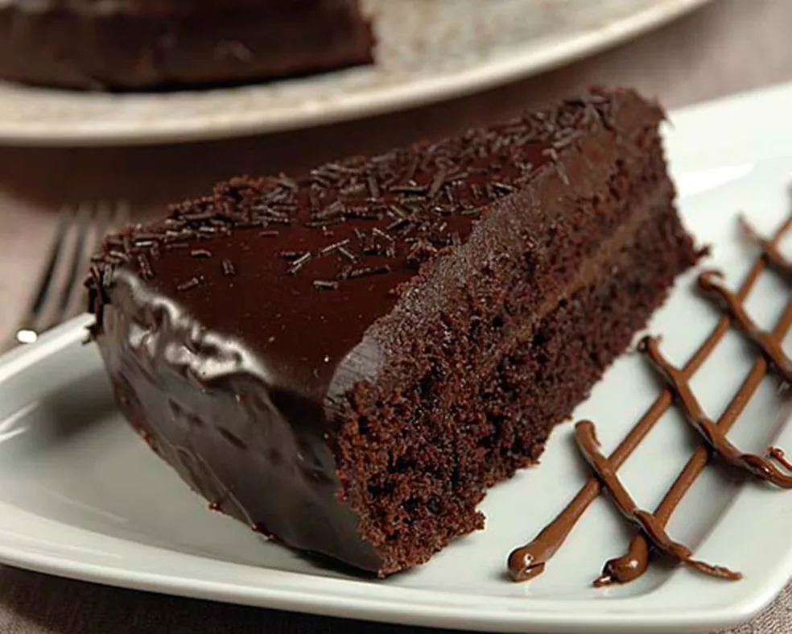
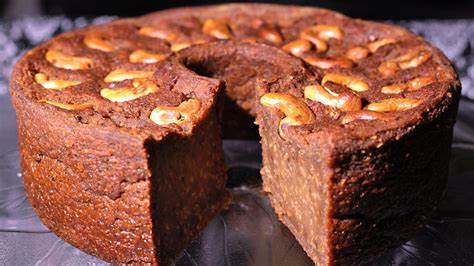
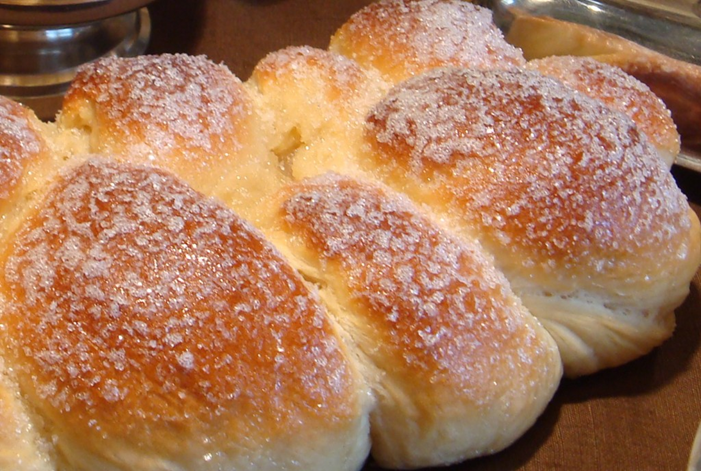
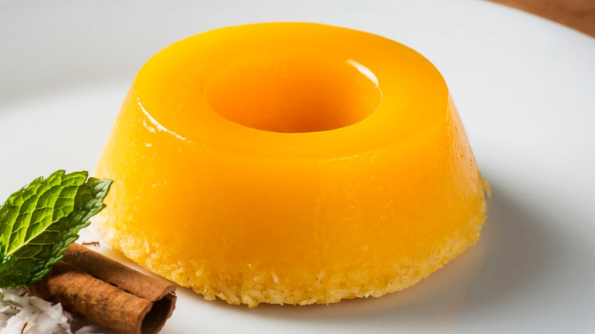
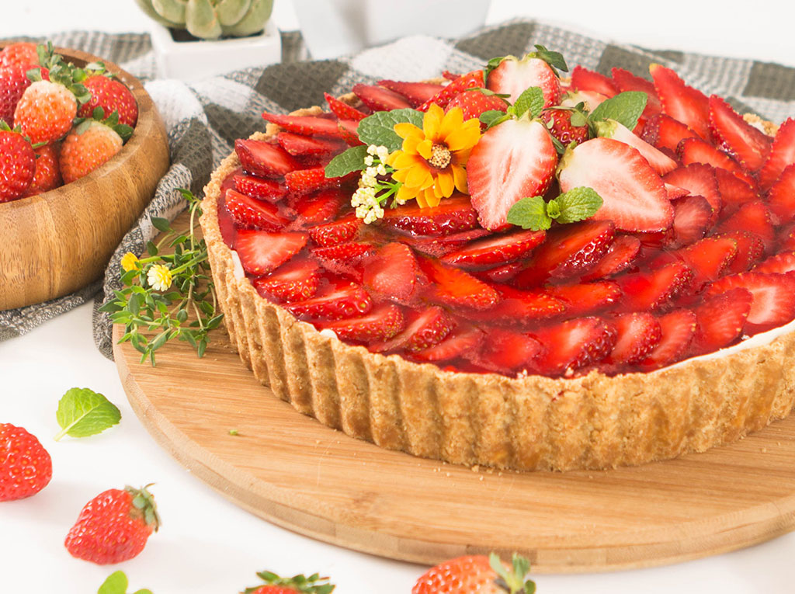
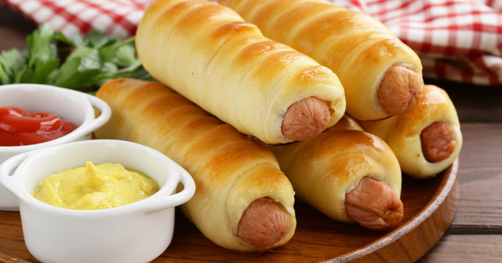

Bolo de chocolate
16 de março de 2024

O bolo de chocolate é uma das sobremesas mais amadas e clássicas, conhecido por sua textura macia, úmida e sabor intenso de chocolate. A massa do bolo é geralmente preparada com cacau em pó ou chocolate derretido, açúcar, farinha de trigo...
Bolo pé de moleque
24 de agosto de 2024

O bolo pé de moleque é uma sobremesa deliciosa e autêntica da culinária brasileira, que combina o sabor doce e crocante do pé de moleque (um doce típico feito de amendoim e rapadura) com a suavidade de um bolo caseiro.
Pão doce
09 de janeiro de 2024

O pão doce é uma sobremesa ou lanche tradicional, caracterizado por sua massa macia, fofinha e levemente adocicada. A base do pão doce é geralmente feita com farinha de trigo, fermento biológico, açúcar, leite, ovos e manteiga, o que resulta em uma textura macia e suave, com sabor delicado.
Quindim
24 de julho de 2024

O quindim é uma sobremesa tradicional brasileira, conhecida por sua textura cremosa, brilho intenso e sabor doce e delicado. Feito à base de gema de ovo, açúcar, coco ralado, manteiga e coco leiteiro, o quindim tem uma cor vibrante, geralmente amarela, que vem das gemas, e é caracterizado por sua consistência suave e gelatinosa.
Torta de morango
19 de setembro de 2024

A torta de morango é uma sobremesa irresistível, conhecida por sua combinação de sabores doces e refrescantes, com a acidez suave dos morangos frescos. A base da torta é feita com uma massa de biscoito (geralmente de biscoito de maisena ou biscoito de chocolate) ou uma massa podre.
Enroladinho
30 de setembro de 2024

O enroladinho é um salgado delicioso e versátil, muito popular em festas e lanches no Brasil. Ele é feito com uma massa macia e leve, geralmente à base de farinha de trigo, fermento biológico, manteiga ou óleo, açúcar e sal, que resulta em uma textura fofinha e delicada após assado.